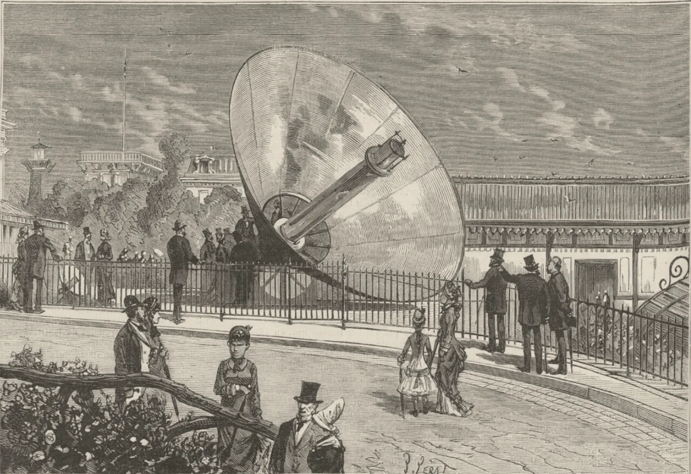

· Edición 63 · 4 min de lectura
La capacidad solar de Colombia creció 62% en nueve meses

La capacidad solar de Colombia creció 62% en nueve meses
En pocas palabras. Entre enero y septiembre, Colombia sumó casi 1.000 megavatios solares, y ya casi 12 de cada 100 megavatios del sistema eléctrico son solares, según XM, el operador. Para usted es luz que no depende de la lluvia, y el mundo va igual: ya no tanto por el clima como por no depender de un estrecho al otro lado del planeta, según la Agencia Internacional de Energía. Lo frenan las líneas de transmisión que no llegan y la propuesta de cobrarles IVA a los paneles desde 2028, que el Congreso empieza a discutir.
El dato curioso. En la Exposición Universal de París de 1878, el francés Augustin Mouchot hizo hielo con la luz del sol: un enorme espejo en forma de cono, el del grabado, calentaba una caldera que movía una máquina de frío. Ganó medalla de oro. Después, el Gobierno francés concluyó que la energía solar no era rentable, porque el carbón se había abaratado, y le retiró el apoyo. Hoy, el precio decide lo mismo, pero al revés.
Qué mejoró. Entre Sabanalarga y Usiacurí, en el Atlántico, 403.920 paneles cubren unas 415 hectáreas. El 21 de octubre, Enel declaró ese parque en operación comercial y completó el mayor complejo solar del país.
Al cierre de septiembre, Colombia tenía 2.590 megavatios solares en operación, 62% más que en diciembre, según XM. En nueve meses entró casi el triple que en todo 2025. En 2018, solar y eólica juntas no llegaban a 50 megavatios, según el Ministerio de Minas.
8 de cada 100
Eran solares en diciembre de 2025, según XM.
12 de cada 100
Eran solares en septiembre de 2026, tras sumar casi 1.000 megavatios en nueve meses.
53 de cada 100
Serían de sol, viento, pequeñas hidroeléctricas y plantas menores en 2037, según la proyección de la UPME.
Fuente: XM, según pv magazine; UPME, plan de generación 2023-2037
Lo que cambia en 10 a 50 años: un país que prende la luz sobre todo con agua tendría en el sol una segunda columna. La UPME, que planea la energía, proyecta que el agua y los combustibles pasen de 91 a 47 de cada 100 megavatios en 2037. Y la Agencia prevé que en América Latina la solar supere a las hidroeléctricas hacia el final de esta década.
¿Por qué mejoró?
- Más barata. Su costo cayó 90% entre 2010 y 2023, según IRENA, la agencia internacional de las renovables.
- Reglas y compradores. La Ley 1715 de 2014 dio alivios de impuestos, y la subasta de julio asignó casi 1.000 megavatios solares y 100 de baterías.
- Seguridad. El sol no se importa. Por eso, prevé la Agencia, el mundo instalará de 2026 a 2031 casi 60% más renovables que en los seis años anteriores.
¿Qué lo amenaza? Las líneas. XM esperaba 4.475 megavatios nuevos en 2026, de todas las fuentes; a septiembre habían entrado 1.039. En 2025, 55 de cada 100 proyectos de transmisión iban retrasados. El sol sale todos los días; las torres, no tanto.
Y el IVA. La ley de rescate sacaría paneles e inversores de la lista de exentos desde 2028, aunque, según Actualícese, la Ley 1715 podría mantenerlos libres.
Ya pasó antes. Chile, con el desierto de Atacama, botó en 2025 unos 6.000 gigavatios hora de sol y viento que la red no alcanzó a llevar o nadie necesitaba a esa hora. Las baterías evitaron que fuera más.
Pero ojo.
- Megavatio no es energía. De noche los paneles no producen. (Conocimiento general.)
- Cifras que bailan. El Gobierno anterior anunció 4,6 gigavatios entre solar y eólica; XM contaba unos 2,2 solares efectivos, según El Colombiano.
Lo que ya habíamos contado. El 8 de octubre contamos por qué podría faltar luz en 2027 si El Niño seca los ríos (ver esa edición). Hoy, de dónde puede salir más.
Qué hacer con esto
Para ir pensando. Quien piense poner paneles en casa o en su negocio tiene hoy alivios de la Ley 1715; el IVA podría cambiar desde 2028.
Cómo prepararse. Nada urgente. Con El Niño, conviene ahorrar luz de noche, cuando no hay sol.
Ojo con el cuento. «Ya tenemos tantos gigavatios solares.» Preguntar si están instalados, en pruebas o en operación comercial: el mismo parque puede aparecer con tres cifras.
Dos lecturas
Las dos posturas sobre el tema, en su mejor versión
Mantener los alivios. Cada megavatio solar baja el riesgo de apagón en sequía y la dependencia del gas importado. Cobrar IVA ahora encarece justo lo que el país necesita para el próximo El Niño.
Quitarlos, porque ya compite. Si el costo cayó 90%, el sol ya no necesita ayuda del fisco, que sí necesita ingresos. El alivio tributario debería ir a lo que todavía no es rentable, como las baterías.
Quién decide y cuándo
Quién decide. El Congreso, en la ley de rescate; el Ministerio de Minas y la UPME, en subastas y líneas.
Cuándo. Sin fecha oficial: la prensa ubica el primer debate entre finales de noviembre y comienzos de diciembre.
Cómo participar. Escribir a los ponentes de la ley o ir a las audiencias de los proyectos de transmisión. (Conocimiento general.)
Seguimiento de la decisión
Pendiente · sin fecha fija
Comisiones económicas (terceras y cuartas) de Senado y Cámara, en sesiones conjuntas, y después las plenarias: Aprobar o no el cambio de la ley de rescate (proyecto 477 de 2026 Cámara) que sacaría los paneles solares, los inversores y los controladores de carga de la lista de bienes exentos de IVA desde 2028.
Según Portafolio y La República, el cambio regiría desde enero de 2028. Actualícese, una publicación tributaria, advierte que esos equipos podrían seguir libres de IVA por la Ley 1715 de 2014. El 10 de noviembre empezaban mesas técnicas entre Gobierno y Congreso; la prensa ubica el primer debate entre la segunda mitad de noviembre y comienzos de diciembre, sin fecha oficial. Las sesiones ordinarias terminan el 16 de diciembre.
La paradoja del día
Lo más absurdo de la edición, en dos líneas
En 1878, Francia dejó el sol porque salía caro. En 2026 es de la electricidad más barata que hay, y Colombia discute si les cobra IVA a los paneles.
Para conversar
La pregunta. Si el sol ya es de lo más barato, ¿debe seguir con alivios de impuestos o le toca pagar como cualquiera?
Para leer más
Libros para seguir con el tema
Cómo funciona el mundo. Una guía científica de nuestro pasado, presente y futuro, de Vaclav Smil (Debate, 2023; traducción de Francesc Pedrosa Martín). Un científico de la energía explica, con cifras, por qué cambiar la forma de producirla toma décadas. Un buen contrapeso al entusiasmo.
El mundo no se acaba, de Hannah Ritchie (Anagrama, 2025). Una científica de datos de Our World in Data muestra qué problemas ambientales mejoran y por qué, con la energía limpia en el centro.
¿Le interesa ver las fuentes?
Todos los documentos y datos que usamos
44 fuentes: 2 académicas, 7 oficiales, 1 de datos, 5 de organizaciones, 25 de prensa, 4 de referencia.
- Oficial Agencia Internacional de Energía (AIE), Renewables 2026 (6 de noviembre de 2026). Executive summary - Renewables 2026
- Oficial Agencia Internacional de Energía (AIE), comunicado (6 de noviembre de 2026). Energy security concerns spur faster renewables growth across a widening constellation of countries
- Oficial Agencia Internacional de Energía (AIE), Renewables 2026. Renewable electricity - Renewables 2026
- Prensa BNamericas, sobre el informe de la AIE (noviembre de 2026). Latin America and the Caribbean forecast to add 165GW of renewables
- Prensa GreentechLead, sobre el informe de la AIE (noviembre de 2026). IEA's Latin America Renewable Energy Market Report: Brazil to Add 90 GW, Chile 20 GW as Solar Power Overtakes Hydropower by 2030
- Prensa APA (6 de noviembre de 2026). IEA chief: Energy security is now the main driver of renewable energy development
- Prensa The Energy Mix (noviembre de 2026). IEA Sees Renewables Surging World-Wide as Countries Seek Energy Security, Lower Costs
- Prensa pv magazine Latinoamérica, con datos de XM (3 de noviembre de 2026). Colombia alcanza los 2.590 MW de capacidad solar instalada
- Prensa pv magazine, con datos de XM (4 de noviembre de 2026). Colombia's PV capacity tops 2.59 GW
- Datos IndexBox, con datos de XM (noviembre de 2026). Colombia Solar Capacity Hits 2,590 MW, 11.7% of National Grid
- Prensa El Norte, con el informe trimestral de XM (noviembre de 2026). 698,2 megavatios nuevos ingresaron al sistema eléctrico: XM
- Prensa pv magazine, con datos de XM (11 de febrero de 2026). Colombia deploys 333 MW of PV in 2025
- Prensa El Heraldo, con el boletín de XM del 6 de noviembre (8 de noviembre de 2026). Baterías comienzan a ganar espacio en el sistema eléctrico colombiano
- Prensa La República, con cifras del Ministerio de Minas y Energía (2020). Colombia recibió 41 proyectos de inversión extranjera en energía entre 2018 y 2020
- Prensa pv magazine Latinoamérica (22 de octubre de 2026). Enel completa en Colombia su mayor complejo solar, de 985 MWdc, con la entrada en operación comercial de Atlántico
- Prensa Valora Analitik (octubre de 2026). Nuevo parque solar de Enel en Atlántico entró en operación: así queda su portafolio en renovables
- Oficial Unidad de Planeación Minero Energética (UPME), comunicado 24 (11 de junio de 2024). Plan de generación de energía de la UPME proyecta 53% de participación de fuentes renovables a 2037
- Prensa Energía Estratégica, sobre el plan de la UPME (junio de 2024). Plan de generación de la UPME proyecta el 53% de participación de fuentes renovables a 2037
- Organización Agencia Internacional de Energías Renovables (IRENA), informe (septiembre de 2024). Renewable Power Generation Costs in 2023
- Prensa TaiyangNews, sobre el informe de IRENA (septiembre de 2024). Solar PV's 2023 Global Costs Were 56% Lower Than Fossil & Nuclear Power
- Académica Universidad de Medellín, artículo académico (registro en Minciencias). Regulating the integration of renewable energy in Colombia: Implications of Law 1715 of 2014
- Oficial Ministerio de Minas y Energía (abril de 2026). Gobierno lanza subasta de energía a largo plazo para blindar el sistema eléctrico y acelerar la transición energética en Colombia
- Prensa pv magazine (30 de julio de 2026). Colombia awards 270 MW of solar, 100 MW of storage in clean energy auction
- Prensa pv magazine (31 de julio de 2026). Colombia awards 725 MW of solar on second day of green energy auction
- Oficial XM, comunicado sobre El Niño (mayo de 2026). Comunicado fenómeno de El Niño, mayo
- Prensa Portafolio, con datos de XM (mayo de 2026). «Solo han entrado 291 MW»: XM alerta fuerte rezago en nuevos proyectos eléctricos en 2026 ante fenómeno de El Niño
- Prensa El Tiempo, con datos de XM (2025). Faltan 3 meses para terminar 2025 y ha entrado menos del 2% de la energía esperada
- Prensa Portafolio (octubre de 2026). IVA a la gasolina, impuesto al carbono y otros efectos de la ley de rescate en la energía
- Prensa La República (octubre de 2026). Estos son los productos que se encarecen con un ajuste del IVA en la ley de rescate
- Organización Actualícese (2026). Proyecto de Ley de Rescate Económico 2026: análisis técnico de los cambios tributarios
- Prensa Infobae (8 de noviembre de 2026). Así fue la primera reunión por la Ley de Rescate: congresistas revelaron acuerdos y diferencias con el Gobierno
- Prensa ABC Economía (4 de noviembre de 2026). Ley de Rescate Económico: urgencia en el Congreso
- Prensa Reporte Minero, con datos del Coordinador Eléctrico Nacional y Acera (enero de 2026). Vertimiento de energías renovables llegó a 6.205 GWh en 2025 y BESS contuvo el alza
- Organización Ember, centro de análisis de energía (septiembre de 2025). Reducir los vertimientos en Chile: una clave para aprovechar al máximo las energías renovables
- Prensa El Colombiano (2026). Las cuentas que no cuadran en el «boom» de la energía solar que deja el Gobierno Petro
- Organización Bureau International des Expositions (BIE). Expo 1878 Paris: the revelation of sun power
- Académica Universidad de Flensburg, laboratorio de historia de la física. Mouchot's Solar Heater
- Organización Science Storytelling (proyecto europeo de historia de la ciencia). Augustin Mouchot, biografía
- Prensa CleanTechnica (22 de abril de 2018). Solar Technologies Of Days Gone By
- Oficial Agencia Internacional de Energía (calendario de publicaciones). World Energy Outlook 2026 - Event
- Referencia Penguin Random House (ficha del libro). Cómo funciona el mundo, de Vaclav Smil (Debate)
- Referencia Casa del Libro (ficha del libro). Cómo funciona el mundo
- Referencia Blackwell's (ficha del libro). El mundo no se acaba, de Hannah Ritchie (Anagrama)
- Referencia Librería Nacional (ficha del libro). El mundo no se acaba
Glosario
Las palabras técnicas, explicadas
- Megavatio (MW): medida de cuánta potencia puede entregar una planta en un momento. Mil megavatios son un gigavatio.
- Kilovatio hora: medida de la energía que de verdad se produce o se consume en un tiempo; es lo que cobra la factura.
- Operación comercial: cuando una planta ya vende su energía al sistema; antes pasa por una etapa de pruebas.
- XM: la empresa que opera el sistema eléctrico y el mercado de energía en Colombia.
- UPME: Unidad de Planeación Minero Energética, la entidad que planea cuánta energía y cuántas líneas necesita el país.
- Transmisión: las líneas de alto voltaje que llevan la energía de las plantas a las ciudades.
- Subasta de largo plazo: concurso en que las plantas compiten por contratos de venta de energía por muchos años.
- Vertimiento: energía que una planta podría producir pero que se desperdicia porque la red no la puede llevar o no hay quién la use.
- Batería (almacenamiento): equipo que guarda energía para usarla después, por ejemplo la del mediodía en la noche.
Nota metodológica
Cómo se hizo esta edición y qué no pudimos verificar
El horizonte. ¿Cambia el rumbo de cómo vive la gente, en Colombia o en el mundo, dentro de 10 a 50 años? Sí. En ese plazo, un país que hoy depende sobre todo del agua para tener luz tendría en el sol una segunda fuente grande, y con ella menos riesgo de apagón en cada El Niño. La evidencia: la serie de XM (de 1.594 megavatios solares en operación a finales de 2025 a 2.590 en septiembre de 2026, y menos de 50 de solar y eólica en 2018, según el Ministerio de Minas); la proyección de la UPME a 2037, y la de la Agencia Internacional de Energía para el mundo y América Latina hasta 2031.
Entra por la puerta del avance: hay una serie que muestra la mejora, se puede decir por qué mejoró (costos, reglas, subastas, seguridad) y hay algo que la amenaza o la sostiene (las líneas de transmisión y el IVA de la ley de rescate). La puerta de entrada es el informe de renovables de la Agencia, del 6 de noviembre, y las cifras trimestrales de XM, publicadas el 3 y el 6 de noviembre. Es también un tema de tecnología y del mundo. Tras el cambio de fondo del lunes, un avance diversifica la semana, pero lo elegimos por puntaje, no para llenar una puerta.
Revisamos el archivo: la energía solar nunca fue tema. Apareció entre los descartes del 6 de noviembre, cuando las cifras de capacidad no coincidían y el día anterior habíamos contado los carros eléctricos. Ahora hay un hecho nuevo y cifras de XM de un mismo corte. Lo enlazamos con el riesgo de apagón (8 de octubre): lo nuevo es de dónde saldría la luz que falta. Toca también la edición sobre carros eléctricos (3 de noviembre), por la misma ley de rescate, pero el tema es otro.
Puntaje. De 1 a 3 en cada criterio; peso en la vida y horizonte valen doble (máximo 24). Solo entra un tema con horizonte 3.
| Tema | Puerta | ¿Cambia el rumbo en 10 a 50 años? | Alcance | Peso | Horizonte | Cercanía | Margen | Mirada | Total | Resultado |
|---|---|---|---|---|---|---|---|---|---|---|
| La capacidad solar de Colombia crece 62% en nueve meses (Colombia y mundo) | avance | Sí: el sol como segunda fuente de luz de un país que depende del agua | 3 | 2 | 3 | 3 | 2 | 2 | 20 | Elegido (edición 63) |
| Desplazamiento por el clima (Ley 2577) | fondo | Sí: quién tendrá que mudarse y con qué protección | 2 | 3 | 3 | 3 | 2 | 3 | 22 | Sin hecho nuevo |
| Esperanza de vida en Colombia | fondo | Sí: cuántos años vive la gente y cómo cambia el país | 3 | 3 | 3 | 3 | 1 | 1 | 20 | Sin publicación nueva verificada; cerca de envejecimiento |
| Segunda línea del metro de Bogotá | fondo | Sí: cómo se moverá la ciudad por décadas | 2 | 2 | 3 | 3 | 2 | 1 | 18 | La decisión es en 2027 |
| Hoja de ruta para dejar los combustibles fósiles (COP30 y COP31) | fondo | Sí: de qué energía vivirá el mundo | 3 | 2 | 3 | 2 | 1 | 1 | 17 | No obliga; pegada a la COP31 y al petróleo |
| Regulador de inteligencia artificial en Australia (mundo) | fondo | Sí: quién vigila a los agentes de inteligencia artificial | 3 | 2 | 3 | 1 | 1 | 2 | 17 | Una sola fuente; sin canal claro |
| Centros de datos y electricidad en Estados Unidos | fondo | Sí: la energía de la próxima infraestructura | 3 | 2 | 3 | 1 | 1 | 1 | 16 | Sin canal claro; estudios que se contradicen |
| Molécula contra el apetito (Stanford, Nature) | avance | No todavía: solo probada en animales | 3 | 2 | 2 | 1 | 1 | 2 | 15 | No pasa el horizonte |
En el tema elegido, el peso vale 2: toca el servicio de luz y la factura de todos, pero no la vida o la salud de forma directa. La mirada vale 2: la prensa económica publica las cifras, pero casi nadie las conecta con el informe de la Agencia ni con el IVA. El margen vale 2 porque hay una decisión en el Congreso, sin fecha. El desplazamiento por el clima tiene más puntaje, pero sigue sin un hecho reciente, que es condición para entrar. La esperanza de vida empata, pero no encontramos una publicación nueva del Dane, solo una cifra actualizada en su portal; a igual puntaje, el avance aporta lo que le falta a la semana. Ningún otro tema llega a 19 con un hecho nuevo, así que hoy hay una sola edición.
Hicimos unas 55 búsquedas en español e inglés. No pudimos abrir los documentos completos, tampoco el informe de la Agencia ni los boletines de XM; trabajamos con resúmenes, comunicados y resultados de búsqueda. De 44 fuentes, 19 no son de prensa.
Quedó sin verificar o con límites:
- Las cifras de capacidad solar cambian según qué se cuente (instalada, en pruebas o en operación comercial). Usamos las de operación comercial de XM: 1.594,08 megavatios a finales de 2025 y 2.590,26 a finales de septiembre de 2026, 11,7% de la capacidad efectiva neta (El Norte dice 11,5%). El boletín de XM del 6 de noviembre habla de 2.720 megavatios, 12%, según El Heraldo; no lo leímos. En 2025, 581 megavatios volvieron a pruebas por un cambio de regla de la CREG, la comisión que regula la energía, y por eso la serie no se puede comparar año por año; otras fuentes dan 1.871 megavatios para finales de 2024.
- «Casi el triple que en todo 2025»: entraron 996 megavatios entre enero y septiembre de 2026 frente a 333,87 en 2025, según XM. En 2024 entraron más de 1.000, según varias fuentes.
- Los 50 megavatios de 2018 son de solar y eólica juntas, según el Ministerio de Minas citado por La República; otras fuentes dicen menos de 45.
- El 91 y el 47 de cada 100 megavatios son del comunicado de la UPME de junio de 2024 sobre el plan 2023-2037; el 91 era la participación de hidroeléctricas y térmicas en ese momento. El 53 incluye sol, viento, pequeñas hidroeléctricas y plantas menores. Hay un plan más reciente (2025-2039) cuyas cifras no encontramos.
- Que la solar supere a las hidroeléctricas en América Latina lo tomamos de resúmenes de prensa del informe de la Agencia, no del documento.
- Los 4.475 megavatios esperados en 2026 son del comunicado de XM de mayo; los 1.039 que entraron a septiembre, de su informe trimestral. Ambos cuentan todas las fuentes, no solo la solar. El 55 de cada 100 proyectos de transmisión retrasados es de 2025; otras notas de XM dan 60 para la red nacional.
- Las cifras de la subasta de julio (725 y 270 megavatios solares, 100 de baterías) vienen de dos notas de pv magazine sobre dos jornadas; no vimos el resultado oficial.
- Los 6.000 gigavatios hora botados en Chile varían: 6.084 según Acera y el Coordinador Eléctrico Nacional, 6.205 según otro análisis. Sobre la causa hay desacuerdo: Ember la atribuye a la transmisión y Acera, a que sobra generación a ciertas horas.
- La fecha del informe del Gobierno francés que le quitó el apoyo a Mouchot no aparece en las fuentes; por eso escribimos «después». Lo del carbón barato lo tomamos de CleanTechnica y de resúmenes de su biografía; no leímos el informe francés.
El grabado es de Jules Férat y muestra el concentrador solar de Mouchot en la Exposición Universal de París de 1878; lo tomamos de Wikimedia Commons, donde figura en dominio público. La bajamos al primer intento.
Los libros: ninguno de los dos está en Santo & Seña (buscamos en su catálogo), así que van sin enlace. Autores, editoriales, años y traductor los tomamos de las fichas de Penguin Random House, Casa del Libro, Blackwell's y Librería Nacional; no encontramos el nombre del traductor de Ritchie.